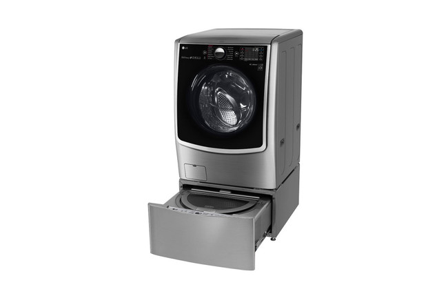
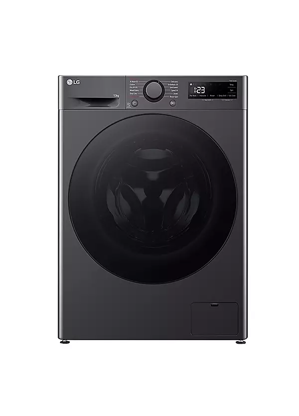

La marca Life Good (LG) fue fundada en 1958 por Koo In-Hwoi en Corea del Sur. Originalmente, la empresa se llamaba Lak-Hui Chemical Industrial Corporation y se dedicaba a la producción de productos químicos. Sin embargo, con el tiempo, LG diversificó su negocio y comenzó a fabricar productos electrónicos, electrodomésticos y dispositivos de comunicación.
A lo largo de las décadas, LG ha experimentado un crecimiento significativo y se ha convertido en una de las principales empresas de tecnología a nivel mundial. En la década de 1980, LG comenzó a expandirse internacionalmente, estableciendo filiales y oficinas en varios países. La empresa se destacó por su innovación y calidad en productos electrónicos, lo que le permitió ganar una sólida reputación en el mercado global.
LG ha sido pionera en el desarrollo de tecnologías innovadoras, como pantallas OLED, televisores inteligentes, electrodomésticos inteligentes y dispositivos móviles. La empresa ha invertido significativamente en investigación y desarrollo para mantenerse a la vanguardia de la industria tecnológica.
Además de su enfoque en la innovación, LG también ha demostrado un compromiso con la sostenibilidad y la responsabilidad social corporativa. La empresa ha implementado iniciativas para reducir su impacto ambiental, como el uso de materiales reciclados en sus productos y la adopción de prácticas de fabricación más sostenibles.
En la actualidad, LG continúa siendo una fuerza importante en la industria tecnológica, ofreciendo una amplia gama de productos que van desde televisores y electrodomésticos hasta dispositivos móviles y soluciones de energía. La empresa sigue enfocándose en la innovación y la sostenibilidad, con el objetivo de mejorar la vida de las personas a través de la tecnología.
Los lavarropas LG son conocidos por su calidad, durabilidad y tecnología avanzada. La empresa ofrece una variedad de modelos que incluyen características como ciclos de lavado personalizados, eficiencia energética y conectividad inteligente. Los lavarropas LG están diseñados para proporcionar un rendimiento excepcional y una experiencia de lavado conveniente para los usuarios.
En resumen, la historia de la marca Life Good (LG) es una historia de innovación, crecimiento y compromiso con la calidad y la sostenibilidad. Desde sus humildes comienzos como una empresa química hasta convertirse en un líder global en tecnología, LG ha demostrado su capacidad para adaptarse y prosperar en un mercado en constante evolución.
A lo largo de los años, los lavarropas LG han evolucionado significativamente en términos de diseño, tecnología y funcionalidad. Desde los primeros modelos básicos hasta los modernos lavarropas inteligentes, LG ha incorporado características innovadoras para mejorar la experiencia de lavado de los usuarios.
Los lavarropas LG han adoptado tecnologías como la inteligencia artificial, la conectividad Wi-Fi y la eficiencia energética para ofrecer un rendimiento superior y una mayor comodidad. Además, LG ha desarrollado ciclos de lavado personalizados y opciones de cuidado de la ropa para satisfacer las necesidades específicas de los usuarios.
A continuación, se presentan algunos de los modelos más destacados de lavarropas LG:

